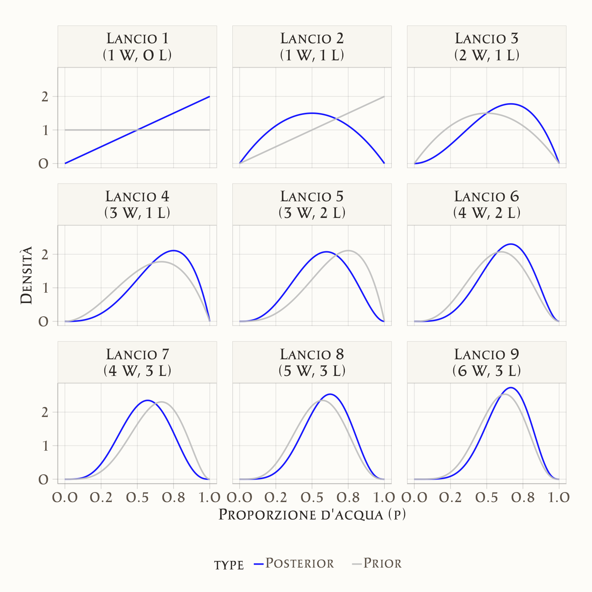

42 La quantificazione dell’incertezza
“The central problem of statistics is how to make decisions under uncertainty.”
— Leonard J. Savage, The Foundations of Statistics
Introduzione
Nel Capitolo 41 abbiamo visto come l’incertezza sia un aspetto inevitabile della ricerca psicologica e più in generale della conoscenza scientifica. Abbiamo distinto diversi tipi di incertezza e sottolineato la necessità di strumenti per gestirla in maniera coerente. Questo ci porta naturalmente al cuore dell’approccio bayesiano: come quantificare matematicamente l’incertezza e come aggiornarla quando osserviamo nuove evidenze.
Se nel Capitolo 41 abbiamo definito che cosa intendiamo per incertezza, in questo capitolo vediamo come rappresentarla matematicamente e come aggiornarla sistematicamente quando raccogliamo nuovi dati.
Panoramica del capitolo
- Come quantificare e rappresentare matematicamente l’incertezza attraverso le distribuzioni di densità.
- Il processo di integrazione delle nuove evidenze con le conoscenze preesistenti.
- Come i parametri sconosciuti determinano i dati osservati attraverso processi probabilistici.
42.1 L’incertezza come distribuzione di probabilità
Prima di addentrarci nei meccanismi dell’aggiornamento bayesiano, è fondamentale comprendere come l’approccio bayesiano concettualizza l’incertezza. A differenza del pensiero quotidiano, che spesso tratta l’incertezza come una semplice mancanza di informazione, la statistica bayesiana la rappresenta attraverso distribuzioni di probabilità che catturano non solo cosa non sappiamo, ma anche quanto siamo incerti riguardo a ciò che non sappiamo.
42.1.1 L’esempio di Sherlock Holmes
Per illustrare questo concetto, consideriamo un esempio ispirato ai racconti di Arthur Conan Doyle (Kruschke, 2014). Immaginiamo che Sherlock Holmes stia indagando su un caso di furto in una villa londinese. Il detective sa che il colpevole è una delle quattro persone presenti quella sera: il maggiordomo, la cuoca, il giardiniere e un ospite. Inizialmente, senza alcuna evidenza particolare, Holmes potrebbe assegnare la stessa probabilità a ciascun sospetto: 25% per ognuno.
Questa distribuzione uniforme dell’incertezza rappresenta uno stato di “ignoranza simmetrica” - non abbiamo ragioni per sospettare una persona più delle altre. Tuttavia, man mano che Holmes raccoglie indizi, la sua incertezza si trasforma e si concentra. Supponiamo che scopra impronte di terra fresca nel corridoio che porta alla cassaforte. Questa evidenza aumenta la probabilità che il colpevole sia il giardiniere (che lavora con la terra) e diminuisce quella degli altri sospetti. La distribuzione della probabilità potrebbe ora diventare: giardiniere 60%, maggiordomo 20%, cuoca 15%, ospite 5%. Successivamente, Holmes potrebbe scoprire che il giardiniere ha un alibi solido per l’ora del furto. Questa nuova informazione ridistribuisce completamente la probabilità: giardiniere 5%, maggiordomo 50%, cuoca 35%, ospite 10%.
42.1.2 La natura dinamica dell’incertezza bayesiana
L’esempio relativo a Sherlock Holmes illustra tre aspetti cruciali dell’approccio bayesiano all’incertezza. Primo, l’incertezza non è semplicemente “non sapere qualcosa”, ma una distribuzione strutturata di plausibilità tra diverse possibilità. Secondo, questa distribuzione cambia sistematicamente man mano che nuove evidenze diventano disponibili. Terzo, in ogni momento possiamo quantificare precisamente il nostro grado di certezza o incertezza riguardo a ciascuna ipotesi.
Nel contesto della ricerca psicologica, possiamo applicare lo stesso principio ai parametri dei nostri modelli statistici. Invece di cercare un singolo valore “vero” per un parametro come la media di un gruppo o la forza di una correlazione, trattiamo questi parametri come variabili la cui incertezza può essere rappresentata attraverso distribuzioni di probabilità. Una distribuzione stretta e appuntita indica alta certezza riguardo al valore del parametro, mentre una distribuzione ampia e piatta riflette maggiore incertezza.1
42.2 Dalla certezza puntuale alla distribuzione dell’incertezza
La differenza tra l’approccio tradizionale e quello bayesiano può essere illustrata pensando a come risponderemmo alla domanda “Qual è l’intelligenza media degli studenti di psicologia?” L’approccio tradizionale tenterebbe di fornire una singola risposta numerica, come “Il QI medio è 110”. L’approccio bayesiano, invece, riconoscerebbe l’incertezza inerente in questa stima e fornirebbe una distribuzione: “Siamo piuttosto sicuri che il QI medio sia tra 105 e 115, con 110 come valore più plausibile, ma valori tra 100 e 120 sono ancora ragionevolmente possibili”.
Questa rappresentazione probabilistica dell’incertezza non è semplicemente più onesta intellettualmente - è anche più utile praticamente. Ci permette di prendere decisioni informate che tengono conto dell’incertezza, di pianificare studi futuri che riducano l’incertezza dove è più necessario, e di comunicare i risultati della ricerca in modo che rifletta accuratamente il nostro grado di conoscenza.
42.3 Le fondamenta concettuali dell’inferenza bayesiana
Come è stato discusso nei capitoli introduttivi, l’approccio bayesiano alla statistica si fonda su una visione particolare della probabilità che differisce sostanzialmente dall’interpretazione frequentista tradizionale. Mentre il frequentismo interpreta la probabilità come una proprietà oggettiva del mondo legata alla frequenza di eventi ripetibili, il bayesianesimo la intende come una misura del nostro grado di credenza o certezza riguardo a proposizioni incerte.
42.3.1 Interpretazione bayesiana della probabilità
Nel frequentismo, dire che una moneta ha probabilità 0.5 di dare testa significa che, in un numero infinito di lanci, la frequenza relativa di teste convergerà a 0.5. Questa definizione, pur elegante matematicamente, presenta difficoltà pratiche evidenti: raramente possiamo ripetere un esperimento infinite volte, e molti eventi di interesse sono intrinsecamente irripetibili. Il bayesianesimo offre un’alternativa concettualmente diversa: la probabilità 0.5 rappresenta il nostro grado di credenza che il prossimo lancio darà testa, basato sulle informazioni attualmente disponibili. Questa interpretazione soggettiva della probabilità non la rende arbitraria o non scientifica, purché seguiamo le regole della teoria della probabilità per garantire coerenza logica nelle nostre inferenze.
42.3.2 Il teorema di Bayes come strumento di aggiornamento
Il cuore dell’inferenza bayesiana è il teorema di Bayes, che fornisce una formula matematica per aggiornare le nostre credenze alla luce di nuove evidenze:
\[ p(\theta \mid D) = \frac{p(D \mid \theta)\, p(\theta)}{p(D)}, \]
Questa equazione apparentemente semplice cattura un processo cognitivo fondamentale: come integrare nuove informazioni con conoscenze preesistenti. Il termine \(p(θ)\) rappresenta le nostre credenze iniziali sul parametro \(\theta\) (distribuzione a priori), \((D \mid \theta)\) descrive quanto sono compatibili i dati osservati \(D\) con diversi valori di \(\theta\) (verosimiglianza), e \(p(\theta \mid D)\) è il risultato dell’aggiornamento: le nostre credenze aggiornate dopo aver osservato i dati (distribuzione a posteriori).
Il denominatore \(p(D)\) è spesso chiamato “evidenza” o “probabilità marginale” dei dati, e serve come costante di normalizzazione per garantire che la distribuzione a posteriori integri a 1.
42.4 Il processo generatore dei dati: dal parametro all’osservazione
Un concetto centrale nell’inferenza statistica, che spesso rimane implicito nei corsi introduttivi, è quello del processo generatore dei dati. Questo concetto rappresenta il meccanismo teorico attraverso cui i parametri sconosciuti di interesse producono i dati che osserviamo nel nostro campione.
42.4.1 Comprendere il legame parametro-dati
Quando conduciamo una ricerca psicologica, osserviamo dati specifici: punteggi a test, tempi di reazione, risposte a questionari. Tuttavia, quello che veramente ci interessa sono i parametri sottostanti che hanno generato questi dati: la vera media della popolazione, la vera forza di una correlazione, la vera differenza tra gruppi sperimentali. Il processo generatore dei dati è il modello teorico che specifica come questi parametri latenti si traducono nelle osservazioni concrete.
Consideriamo un esempio concreto. Supponiamo di essere interessati al livello medio di ansia in una popolazione di studenti universitari. Il parametro di interesse è \(\mu\), la vera media della popolazione. Tuttavia, quando raccogliamo dati, otteniamo solo un campione di osservazioni: \(x_1,x_2, \dots,x_n\). Il processo generatore dei dati specifica che ogni osservazione \(x_i\) è estratta da una distribuzione normale con media \(\mu\) e deviazione standard \(\sigma\): \(x_i \sim \mathcal{N}(\mu, \sigma)\).
42.4.2 La verosimiglianza come ponte concettuale
La verosimiglianza \(p(D \mid \theta)\) formalizza matematicamente il processo generatore dei dati (si veda il Capitolo 40). Essa esprime la probabilità di osservare esattamente i dati che abbiamo raccolto, dato un particolare valore del parametro \(\theta\). In altre parole, per ogni possibile valore di \(\theta\), la verosimiglianza ci dice quanto sono “probabili” o “compatibili” i nostri dati osservati.
Questo concetto può essere controintuitivo inizialmente, perché stiamo calcolando la probabilità dei dati (che abbiamo già osservato e quindi sappiamo essere “veri”) condizionata su parametri (che sono sconosciuti). Tuttavia, la verosimiglianza ci fornisce uno strumento potente per confrontare diversi valori possibili del parametro: valori di \(\theta\) che rendono i nostri dati più probabili sono più plausibili di valori che li rendono meno probabili.
42.4.3 L’importanza delle assunzioni sul processo generatore
La scelta del processo generatore dei dati è cruciale e riflette le nostre assunzioni teoriche sul fenomeno studiato. Assumere che i dati seguano una distribuzione normale implica che la variabilità osservata è simmetrica attorno alla media e che valori estremi sono rari ma possibili. Assumere una distribuzione di Poisson suggerirebbe che stiamo modellando conteggi di eventi rari. Assumere una distribuzione Beta indicherebbe che stiamo lavorando con proporzioni o probabilità.
Queste scelte non sono neutre: influenzano profondamente le inferenze che traiamo dai dati. Un vantaggio dell’approccio bayesiano è che rende esplicite queste assunzioni, permettendoci di valutarne la plausibilità e di esplorare la robustezza delle nostre conclusioni a assunzioni alternative.
42.5 L’aggiornamento bayesiano in azione: l’esempio del globo terrestre
Per illustrare concretamente come funziona l’aggiornamento bayesiano, consideriamo l’esempio classico proposto da McElreath nel suo testo “Statistical Rethinking” (McElreath, 2020). Immaginiamo di voler stimare la proporzione della superficie terrestre coperta d’acqua utilizzando un metodo sperimentale semplice: lanciare un globo terrestre in aria, afferrarlo casualmente, e osservare se il punto sotto il nostro dito indice è acqua o terra.
42.5.1 Il setup sperimentale
Chiamiamo \(p\) la vera proporzione di superficie coperta d’acqua. Questo è il nostro parametro di interesse - quello che vogliamo stimare. Ogni lancio del globo ci dà un’osservazione: “W” se tocchiamo acqua, “L” se tocchiamo terra. Il nostro processo generatore dei dati assume che ogni lancio sia indipendente e che la probabilità di osservare acqua in ogni singolo lancio sia esattamente \(p\).
Inizialmente, non abbiamo conoscenze specifiche sulla proporzione d’acqua sulla Terra. Potremmo quindi iniziare con una distribuzione a priori uniforme: ogni valore di \(p\) tra 0 e 1 è ugualmente plausibile. Questa scelta riflette uno stato di “ignoranza informativa” - non abbiamo ragioni per favorire alcuni valori di \(p\) rispetto ad altri.
42.5.2 La dinamica dell’apprendimento
Supponiamo che il primo lancio risulti in “W” (acqua). Come dovrebbe cambiare la nostra credenza su \(p\)? Intuitivamente, osservare acqua dovrebbe aumentare la plausibilità di valori di pp p più alti e diminuire quella di valori più bassi. Il teorema di Bayes formalizza esattamente questa intuizione.
Prima dell’osservazione, tutti i valori di \(p\) avevano la stessa probabilità. Dopo aver osservato “W”, valori di \(p\) vicini a 0 diventano molto implausibili (se \(p\) fosse davvero vicino a 0, sarebbe stato molto improbabile osservare acqua al primo lancio), mentre valori più alti di \(p\) diventano più credibili. La distribuzione a posteriori rifletterà questo cambiamento, concentrando più probabilità sui valori più alti di \(p\).
Il secondo lancio risulta in “L” (terra). Questa nuova osservazione fornisce evidenza nella direzione opposta: ora valori molto alti di \(p\) diventano meno plausibili. La distribuzione a posteriori si aggiusterà di nuovo, bilanciando l’evidenza di entrambe le osservazioni. Il pattern risultante sarà una distribuzione che favorisce valori intermedi di \(p\), coerenti con l’aver osservato sia acqua che terra.
42.5.3 L’accumulo progressivo dell’evidenza
Man mano che continuiamo a raccogliere dati - diciamo che osserviamo la sequenza “W”, “L”, “W”, “W”, “L”, “W”, “L”, “W”, “W” - la distribuzione a posteriori evolve continuamente. Ogni nuova osservazione aggiorna le nostre credenze, integrando la nuova evidenza con tutta l’informazione precedentemente raccolta.
Un aspetto cruciale di questo processo è che la distribuzione a posteriori dopo \(n\) osservazioni diventa automaticamente la distribuzione a priori per la (n+1)-esima osservazione. Questo riflette un principio fondamentale dell’apprendimento bayesiano: ogni pezzo di informazione è integrato cumulativamente, e non c’è perdita di informazione nel processo di aggiornamento.
42.5.4 L’evoluzione dell’incertezza
Oltre a tracciare come cambia la nostra stima “migliore” di \(p\) (ad esempio, la moda della distribuzione), è altrettanto importante osservare come evolve la nostra incertezza. Nelle prime fasi dell’esperimento, quando abbiamo pochi dati, la distribuzione a posteriori sarà relativamente ampia, riflettendo la nostra incertezza sostanziale sul valore di \(p\).
Man mano che raccogliamo più osservazioni, la distribuzione diventa progressivamente più stretta e concentrata. Questo restringimento rappresenta la riduzione dell’incertezza: con più dati, diventiamo più sicuri del valore di \(p\). Tuttavia, la forma precisa di questa evoluzione dipende dai dati specifici osservati. Se i dati sono molto consistenti (ad esempio, molti successi consecutivi), l’incertezza si ridurrà rapidamente. Se i dati sono più variabili, la riduzione dell’incertezza sarà più graduale.

Il grafico illustra visivamente questo processo di aggiornamento bayesiano. In ogni pannello, la linea grigia rappresenta la distribuzione a priori (le nostre credenze prima della nuova osservazione), mentre la linea blu mostra la distribuzione a posteriori (le credenze aggiornate dopo l’osservazione). Si può notare come ogni distribuzione a posteriori diventi la nuova distribuzione a priori per il passo successivo, creando una catena continua di aggiornamento dell’incertezza.
42.5.5 Lezioni dall’esempio del globo
Questo esempio illustra diversi principi fondamentali dell’inferenza bayesiana. Primo, l’aggiornamento delle credenze è sistematico e quantificabile: non ci basiamo su intuizioni vaghe, ma su calcoli matematici precisi. Secondo, l’informazione si accumula in modo ottimale: ogni osservazione contribuisce alla nostra conoscenza complessiva senza perdita di informazione precedente. Terzo, il processo esplicita chiaramente la distinzione tra ciò che sappiamo (la distribuzione a posteriori corrente) e ciò che non sappiamo (l’ampiezza di questa distribuzione). Quarto, il metodo fornisce previsioni calibrate: possiamo usare la distribuzione a posteriori non solo per stimare \(p\), ma anche per predire l’esito di futuri lanci del globo.
42.6 Implicazioni per la ricerca psicologica
L’approccio bayesiano all’inferenza ha profonde implicazioni per come conduciamo e interpretiamo la ricerca psicologica. A differenza dei metodi frequentisti tradizionali, che forniscono risposte dicotomiche (significativo/non significativo) basate su criteri arbitrari (come \(p\) < 0.05), l’inferenza bayesiana offre un quadro più ricco e sfumato per comprendere e comunicare i risultati della ricerca.
42.6.1 Dai test di ipotesi all’aggiornamento delle credenze
Il paradigma tradizionale dei test di ipotesi null’ipotesi (NHST) struttura la ricerca come un processo di decisione binaria: rifiutiamo o non rifiutiamo l’ipotesi nulla. Questo approccio, pur avendo servito la psicologia per decenni, presenta limitazioni ben documentate. Non ci dice quanto è plausibile l’ipotesi alternativa, non quantifica l’incertezza nelle nostre stime, e non fornisce un meccanismo naturale per integrare risultati di studi multipli.
L’approccio bayesiano ricontestualizza la ricerca come un processo continuo di aggiornamento delle credenze. Invece di chiedere “Possiamo rifiutare l’ipotesi nulla?”, chiediamo “Come cambiano le nostre credenze riguardo al fenomeno di interesse alla luce di questi nuovi dati?”. Questa formulazione è più naturale e informativamente ricca: invece di una decisione binaria, otteniamo una quantificazione completa dell’incertezza e un aggiornamento calibrato delle nostre conoscenze. L’integrazione di conoscenze preesistenti
Uno dei vantaggi più significativi dell’approccio bayesiano è la sua capacità di integrare formalmente conoscenze preesistenti nell’analisi dei dati. Nella ricerca psicologica, raramente partiamo da zero: abbiamo teorie esistenti, risultati di studi precedenti, e conoscenze accumulate nel campo. L’inferenza frequentista tradizionale tratta ogni studio come se fosse condotto in un vuoto informativo, ignorando sistematicamente queste conoscenze pregresse.
L’inferenza bayesiana, attraverso la distribuzione a priori, permette di incorporare esplicitamente queste informazioni preesistenti. Questo non significa che i risultati sono “soggettivi” o “non scientifici” - significa semplicemente che riconosciamo che la scienza è un’attività cumulativa dove ogni nuovo studio si costruisce sulle fondamenta degli studi precedenti.
42.6.2 La comunicazione dell’incertezza
I risultati bayesiani si prestano naturalmente a una comunicazione più onesta e informativa dell’incertezza. Invece di riportare che “la differenza tra gruppi è significativa (\(p\) < 0.05)”, possiamo dire che “siamo al 95% sicuri che la vera differenza tra gruppi sia tra 0.3 e 0.8 punti, con 0.55 come valore più plausibile”. Questa formulazione comunica non solo la direzione e la magnitudine dell’effetto, ma anche il grado di certezza che possiamo avere in questa stima.
Inoltre, l’approccio bayesiano fornisce strumenti naturali per rispondere a domande praticamente rilevanti. Invece di limitarci a stabilire se un effetto è “significativo”, possiamo calcolare la probabilità che l’effetto sia abbastanza grande da essere praticamente importante, o la probabilità che un intervento terapeutico sia superiore a trattamenti esistenti.
42.7 Considerazioni pratiche e limitazioni
Pur offrendo vantaggi concettuali significativi, l’approccio bayesiano presenta anche sfide pratiche che devono essere riconosciute e affrontate. La scelta delle distribuzioni a priori, in particolare, può essere controversa e richiede giustificazione teorica. Distribuzioni a priori troppo informative possono dominare i dati, mentre distribuzioni troppo vaghe possono portare a problemi computazionali.
La complessità computazionale rappresenta un’altra sfida. Mentre esempi semplici come quello del globo ammettono soluzioni analitiche, la maggior parte dei modelli bayesiani realistici richiede metodi computazionali intensivi come il campionamento Monte Carlo via catene di Markov (MCMC). Questo può rendere l’analisi bayesiana meno accessibile per ricercatori senza formazione computazionale specializzata.
Tuttavia, lo sviluppo di software user-friendly come Stan, PyMC, e interfacce R come rstanarm e brms stanno rendendo l’analisi bayesiana sempre più accessibile. Inoltre, la crescente disponibilità di potenza computazionale e il miglioramento degli algoritmi stanno riducendo progressivamente questi ostacoli pratici.
Riflessioni conclusive
L’approccio bayesiano alla statistica rappresenta più di un semplice insieme di tecniche analitiche alternative: offre un paradigma fondamentalmente diverso per pensare all’incertezza, all’evidenza, e al processo di scoperta scientifica. Trattando i parametri come quantità incerte caratterizzate da distribuzioni di probabilità, fornendo meccanismi sistematici per l’aggiornamento delle credenze, e integrando naturalmente conoscenze preesistenti con nuove osservazioni, l’inferenza bayesiana si allinea più strettamente con il modo in cui gli scienziati pensano realmente al processo di ricerca.
Nella psicologia contemporanea, dove questioni di riproducibilità e comunicazione dell’incertezza sono al centro del dibattito metodologico, l’approccio bayesiano offre strumenti particolarmente rilevanti. Non è una panacea per tutti i problemi metodologici della disciplina, ma fornisce un quadro concettuale più ricco e strumenti analitici più flessibili per affrontare la complessità intrinseca dei fenomeni psicologici.
L’obiettivo di questo capitolo non è stato quello di fornire ricette procedurali per l’analisi bayesiana - quello verrà nei capitoli successivi - ma di costruire le fondamenta concettuali necessarie per apprezzare perché l’approccio bayesiano sta diventando sempre più importante nella ricerca psicologica contemporanea. Comprendere l’incertezza come distribuzione di probabilità, il meccanismo dell’aggiornamento bayesiano, e il ruolo del processo generatore dei dati ci prepara per esplorare applicazioni più specifiche e tecniche di questi principi fondamentali.
Bibliografia
Un esempio semplice è il modello binomiale, che descrive il numero di successi \(y\) in \(n\) prove indipendenti con probabilità di successo \(\theta\). Scriviamo \(y \sim \text{Binomiale}(n, \theta)\). In questo caso \(\theta\) è il parametro che rappresenta la probabilità di successo in ciascuna prova. Nella pratica, non conosciamo il valore “vero” di \(\theta\) (per esempio, la probabilità che una persona risponda correttamente a un item di un test), ma possiamo rappresentare la nostra incertezza con una distribuzione di probabilità su \(\theta\) e aggiornarla man mano che raccogliamo dati.↩︎